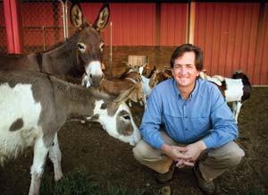
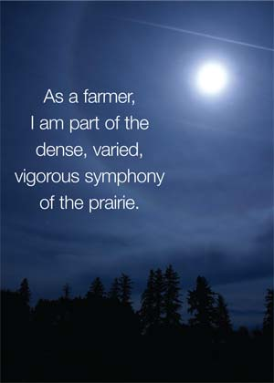

Twenty-five years ago I was an enthusiastic hiker and backpacker. A skier and a climber. I probably spent 45 days a year in the outdoors and slept outside five or six nights a year. I lived in a city, and I tried to get into the nearby mountains every chance I had, but it wasn’t much.
These days, I watch the sun come up several times a week. I know what’s blooming and which birds are coming through. I know how it feels to be outside on the worst night of the year watching coyotes try to open the door of the henhouse. Now that I am a farmer, I see much more of nature than I did when I was outdoors purely for recreation. For me, the difference between hiking and farming is the difference between listening to music and playing music. As a hiker, I enjoy the dramatic rhythms and splashy vistas of the mountains. As a farmer, I am part of the dense, varied, vigorous symphony of the prairie.
I write this during the most bittersweet of our seasons: late fall or early winter, depending on the day and the weather. It’s the time of year when we kill the animals - the cattle, sheep and goats - that we raise for meat for ourselves and our friends.
Just a few months ago they were the spirits of spring, filling the pastures with the joyful, bouncing exuberance of new life. In a few weeks their meat will be in my freezers, and my friends’, on our tables and in our bodies.
People often ask, “How can you eat your own animals?” Sometimes it’s a sincere question, meant to explore the emotions associated with raising your own meat. But often it’s more of an accusation, as in: “How can you be so callous?” So in response I might ask, “How can you be so cruel as to eat animals without knowing them? Without knowing how they lived? Without making sure they were treated kindly and with respect?”
My father, both my grandfathers and all my great-grandparents were grass farmers. It’s quite likely that every generation of my family since prehistoric times has followed a herd of grazing animals - either wild or domesticated - through its lifetime and down its nomadic path across the ages. We have always lived in direct contact and in a kind of kinship with the animals that provide our food. I believe it’s a “natural” relationship in the deepest and most profound sense of that word.
I don’t mean to suggest that everyone should raise their own meat. But it’s perverse, isn’t it, that many people in our society seem to consider it more civilized to eat animals they don’t know? Meanwhile, industrial agriculture treats meat animals as nothing more than cogs in the machine, without regard for their happiness or basic well-being.
From the time I could walk, I was invited to help my relatives care for their livestock. I was about 10 when a neighbor hired me to milk his goats and feed his rabbits. I took to it. I enjoyed the animals and I enjoyed the people. I found that people who shared their lives with livestock were, on the whole, caring but not sentimental.
There’s a Buddhist wisdom in the stockman’s cool compassion. The best of them seem to understand that our own lives on this Earth are as irrefutably temporary as the lives of the animals, and that we should provide as much simple comfort and dignity to our fellow creatures as we can. After all, aren’t simple comfort and dignity among the most important things we wish for ourselves and our children?
So we’re careful, on our little farm, to let the animals live in ways that seem natural to them. None of our creatures lives alone. For any social animal, to be alone is the worst thing. All of them have access, every day of the year, to natural food and clean water. They reproduce just as they were created to reproduce. They live their lives on healthy, familiar pastures where they feel secure. When we handle them, we handle them as gently as possible. When we can’t be gentle, we try to be quick.
Even though I’m proud of the happy, healthy lives we give our animals, I feel a profound twinge of sadness as I watch them grazing in the colorful autumn grass. But it’s a feeling I want to embrace, rather than avoid. It’s the sadness associated with life’s astonishing richness and vitality. It’s the sadness associated with mortality. It’s the sadness we feel as we consider our own impermanence and the impermanence of everything on this planet, everything mortal we hold dear, the sadness that makes life poignant and sweet.
It’s sad when animals I know well and care for reach the end of their lives. But it would be far worse if I didn’t feel this profound connection, this profound gratitude, this profound mortality.
A few years ago I was working on a fence far out in a new pasture, and I kept smelling food. I checked my pockets for old sandwich wrappers. I checked the toolbox for snacks. I smelled the cuffs of my work shirt. Then I realized I had been sitting in wild onions, the wild onions that stay green all the way through the Kansas winter. They smelled like hamburgers.
I’ve noticed lately how the sheep and goats sometimes dine on the green onion shoots. If I sit still, they’ll come over to visit, and I can smell onions on their breath. I like to watch goats eating the seed-heads off sunflowers, and I puzzle over the way sheep like to trim the grass down to a slick butch, like the manicured greens on a golf course.
At the end of a day of farm work I smell like the animals - I reek of them. I also never come in at the end of the day without a new story, some new bit of amusement provided by one of our animals, each of them whimsical, imaginative and utterly unique. I’m outside every night, checking on the livestock and closing the chicken house. I watch the night sky and see the ice crystals when they form a halo around the moon.
I get a lot of blood, dirt and manure on my hands and clothes these days. I get calluses and scars. I get a lot of laughs watching my animals figure out their lives and I get pretty sad when it’s time to kill them. I have a lot more death in my life than I did before. And, ironically, that’s part of the reason why I feel like I have a lot more life in my life. That’s why I farm.
|
 NATHAN HAM Beano, Buster and Bryan. |
 ISTOCKPHOTO/JACOB CARROLL Taking care of animals involves spending a lot of time outdoors, and offers numerous opportunities to connect with the natural world. |
|